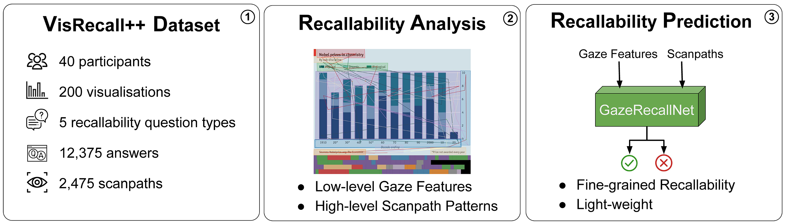

VisRecall++: Analysing and Predicting Visualisation Recallability from Gaze Behaviour
Yao Wang, Yue Jiang, Zhiming Hu, Constantin Ruhdorfer, Mihai Bâce, Andreas Bulling
Proceedings of the ACM on Human-Computer Interaction (PACM HCI), 2024, 8(ETRA): 1-18.

Abstract
Question answering has recently been proposed as a promising means to assess the recallability of information visualisations. However, prior works are yet to study the link between visually encoding a visualisation in memory and recall performance. To fill this gap, we propose VisRecall++ – a novel 40-participant recallability dataset that contains gaze data on 200 visualisations and five question types, such as identifying the title, and finding extreme values.We measured recallability by asking participants questions after they observed the visualisation for 10 seconds.Our analyses reveal several insights, such as saccade amplitude, number of fixations, and fixation duration significantly differ between high and low recallability groups.Finally, we propose GazeRecallNet – a novel computational method to predict recallability from gaze behaviour that outperforms several baselines on this task.Taken together, our results shed light on assessing recallability from gaze behaviour and inform future work on recallability-based visualisation optimisation.Links
Paper: paper.pdf
Supplementary material: supplementary_material.pdf
BibTeX
@article{wang24etra,
title = {VisRecall++: Analysing and Predicting Visualisation Recallability from Gaze Behaviour},
author = {Wang, Yao and Jiang, Yue and Hu, Zhiming and Ruhdorfer, Constantin and Bâce, Mihai and Bulling, Andreas},
year = {2024},
journal = {Proceedings of the ACM on Human-Computer Interaction},
pages = {1--18},
volume = {8},
number = {ETRA}}